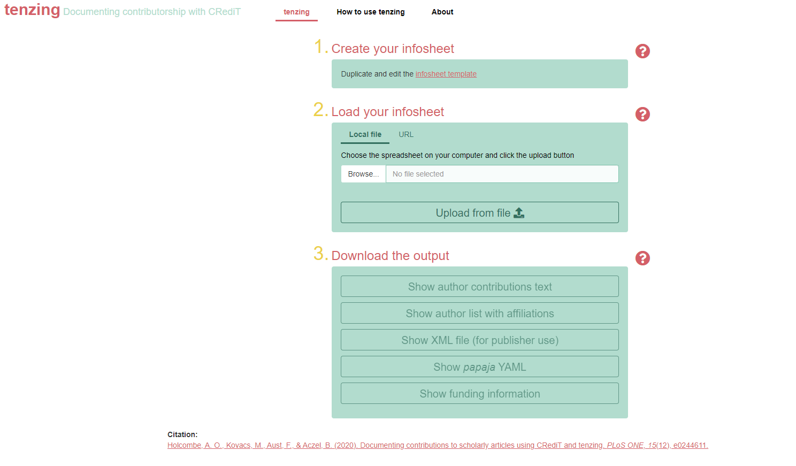
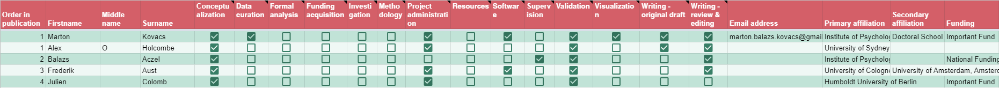
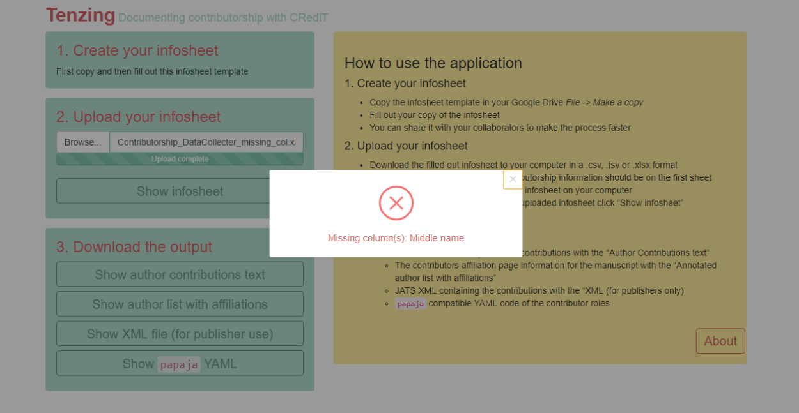
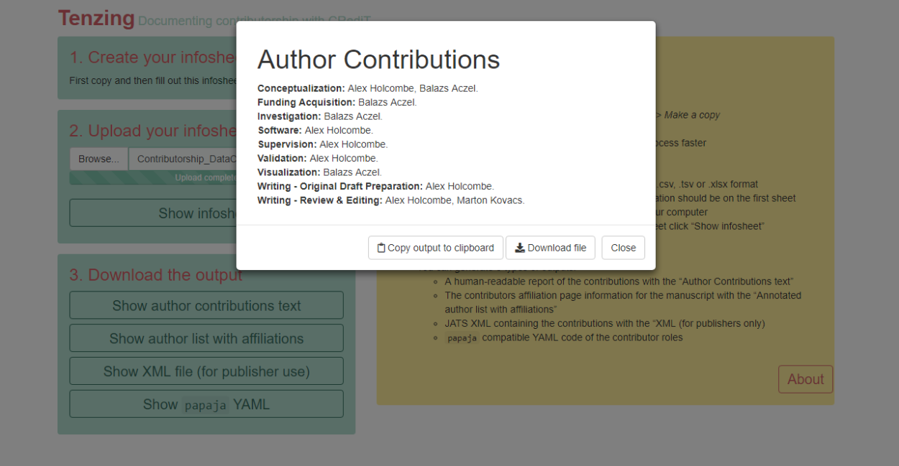
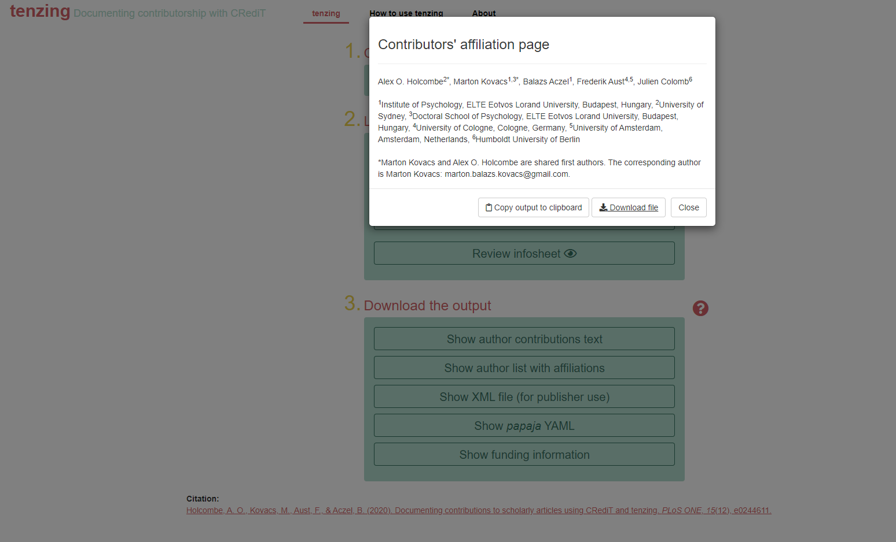

The tenzing package can be used as a shiny application,
which is already embedded in a webpage: https://tenzing.club/. When you first
open the app it might take a few seconds for the page to load.
If you want to instead run the app locally from your computer, first
you have to open R and install the tenzing package with the
following code:
# install.packages("devtools")
devtools::install_github("marton-balazs-kovacs/tenzing")After the installation finishes, you can launch the app.
tenzing::run_app()Overview of the app
When you open the app, you’ll see instructions in the left yellow panel to guide you through the process of providing the input to generate the app’s output: contributorship information using the CRediT taxonomy, in various formats.

Create your contributors table
Enter all your credit information in a copy of the contributors table template linked in this panel. You can also reach it HERE. The template is created as a Google spreadsheet. Make your own copy of it in your Google Drive by File -> Make a copy. This Google spreadsheet format allows easy sharing with your collaborators so they can optionally enter their contributorship information themselves. We suggest you create and fill out the contributors table template in the beginning of your project, as it helps the contributors to have an overview on what each member of the team does. The contributors table can be updated as the project progresses.

Note: Required fields in the contributors table are,
for each author, the Firstname, Middle name,
and Surname columns and the
Order in publication column. The
Order in publication column must be filled for each author
with a unique value. Except in case of multiple first authors. You can
add as many contributors as you like.
If you hover your mouse over the CRediT taxonomy column names in the Google spreadsheet format, you can see the definition of each role. You can find out more about the roles at http://credit.niso.org/.
Upload your contributors table
You can load you contributors table to tenzing by either
uploading a local file from your computer or pasting the share URL of
the Google spreasheet.
Uploading a local file
Before uploading your contributors table to the app, first download it to your computer if you haven’t already. Use File -> Download. The app can process any of three formats: csv, tsv or xlsx (xlsx can have multiple sheets, so be aware that only the first sheet will be used by the app).

Another possibility is to load your contributors table by providing the share URL of the spreadsheet to the app.
Loading contributors table by URL
When you load your contributors table by using the share URL of the
Google spreadsheet do not forget to use the “Anyone with the link” share
option, so tenzing has permission to read your
spreadsheet.
Validating the contributors table
On upload the app checks the validity of your contributors table, with feedback to help you find any problems in your contributors table.
Upon upload, tenzing only checks if columns to generate the outputs exists in your contributors table. If none of the outputs can be created based on the uploaded table you cannot proceed. Otherwise, output specific validations are shown after clicking on a given output.
Warnings usually do not affect the generated outputs so you can ignore them, although they can highlight possible duplication in your contributors table. Any warnings, errors, that the validation returns for a specific output are listed at the bottom of the output modal under Table validation.
If you want to look at your uploaded contributors table you can do that by clicking “Review contributors table”, and if needed, search or filter the contributors by any column.
Download the output
By clicking on each of the four output options you will see a preview of the generated output in a different window. The loading of this window might take a few seconds depending on the number of contributors that you have. After the preview has loaded you can decide whether you want to download the file in doc format or instead copy-paste it.
Below are the output options:
Create a human readable report of the contributions according to CRediT
You can choose to show the initials instead of full names by using the toggle switch. Also, you can list the contributions according to the CRediT roles or by the name of the contributor by using the other switch.

Create the contributors’ affiliation page
tenzing allows multiple first authors. To include
multiple first authors you should use 1 for each author in the
contributors table’s Order in publication column.
tenzing will automatically detect that multiple
contributors are listed as first author and print an additional
statement. In this statement, tenzing will include the name
and email address of the corresponding author as well so do not forget
to provide this information.
